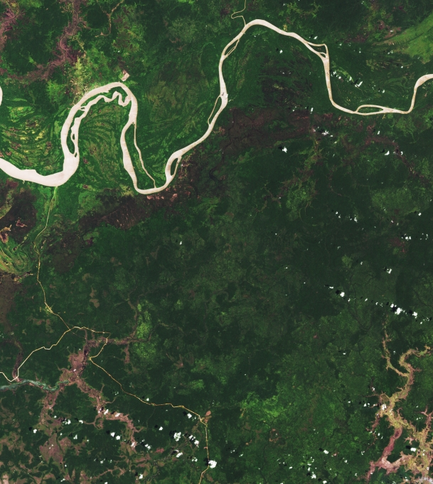

[지금은 기후위기] 인도네시아의 푸른 녹색의 ‘파푸아’…벌채로 몸살
2021.07.02 11:31

전 세계 녹지와 생물 다양성이 크게 이바지하고 있는 파푸아(Papua) 숲이 심각하게 훼손되고 있는 것으로 나타났다. 대규모 농장 건설 등 인프라 구축으로 산림벌채가 빠르게 진행되고 있기 때문이다.
미국 항공우주국(NASA) 기후변화는 최근 이 같은 연구결과를 담은 보고서를 내놓았다. NASA 랜드샛 위성이 분석한 자료를 보면 2001년부터 2019년까지 파푸아에서 약 75만 헥타르의 산림이 개간된 것으로 나타났다. 섬 전체 산림의 약 2%에 이른다.
이중 약 28%가 산업 농장(야자나무와 펄프 등) 개발이었다. 이어 이동 재배용 23%, 벌목용 16% 등으로 나타났다. 나머지는 이를 뒷받침하기 위한 도로건설, 화재 진압에 필요한 기반 시설 등으로 분석됐다.
별이, 선풍기 껐다고 화내 ... "어차피 바람도 못느끼는데 예민하다" 일각서 비판
2021.07.02 12:21

[사진 제공=별이주인 제공]
(*사진이 왜 90도 회전한 상태로 업로드되는지 너무 궁금합니다...)
무더위가 몰아친 7월 1일 저녁, 최근 귀여운 외모로 인기몰이를 하고 있는 별이가 선풍기를 껐다고 성을 낸 사실이 알려져 도마 위에 올랐습니다. 이에 주인은 황당하다는 반응이었습니다. "선풍기 바람도 못 느끼는데 껐다고 갑자기 화를 내더라고요.. 아니 그리고 어차피 저 자리에 있으면 바람도 안 온다고요."
주인의 제보를 받아 확인해 본 결과, 별이는 바람을 맞을 수 없는 자리인 선풍기 날개 바로 아래 쪽에 위치하고 있던 것으로 확인되었습니다. 일각에서는 이를 두고 너무 예민한 것 아니냐는 비판까지 일고있습니다. 하지만 귀여우니 봐주자라는 대중의 여론 또한 거세어, 당분간 갑론을박이 계속될 것으로 전문가들은 예측하고 있습니다.